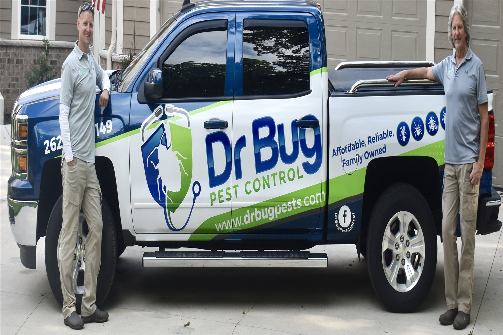

Oconomowoc & surrounding areaSmall pests.
Small pests.
Personal attention.
Family-owned insect pest control, with targeted treatment around your foundation, doors, windows and eaves.

Family owned & operated60-day treatment guaranteeFree quotes
A focused approach
What’s making itself at home?
Four insect groups. Treatment tailored to what’s happening at your home.
Ant control
Ask Dr Bug about ant treatment for your home.
Beyond the foundation
Inspect. Clean. Protect.
01 /
Inspect
Identify areas that need caulk or tree trimming to help keep insects out.
02 /
Clean
Remove accessible exterior spider webs and wasps’ nests with equipment reaching up to 30 feet.
03 /
Protect & document
Treat the foundation, doors, windows and eaves. Interior treatment when necessary.
From a customer
“We are so happy we found Kyle at Dr Bug. What a great company and wonderful people.”— Kris K., testimonial published on drbugpests.com
Let’s talk about your homeYour pest problem.
Your pest problem.
Kyle’s personal attention.
Serving Oconomowoc and the surrounding area. All treatments come with a 60-day guarantee. Call for a free quote and ask about the details.
262-229-9149A first look at your new site. Built around the business behind the name.